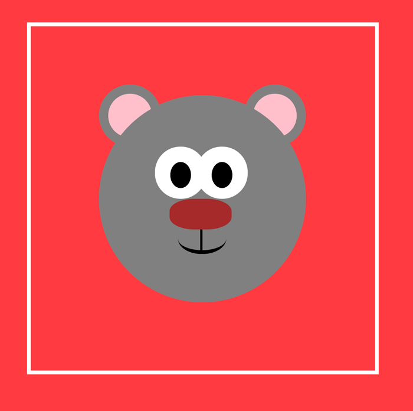

Create an Animal Menagerie using Pure CSS
In this project, you're going to use CSS to create cartoon-like images that you can then animate
P.S. Click the koala's right ear!
See the Pen Sleepy Bear - Pure CSS Image by Diulia Severgnini (@diulia-severgnini) on CodePen.
See the Pen Koala | Pure CSS by James Patrick Kerrane (@jamesjpk123) on CodePen.
What is "Pure CSS"?
The “pure CSS” refers to creating an image simply by adding style (with CSS) to several divs in your HTML — No JavaScript involved!
See the Pen PureCSS Square by Alex (@alexraby) on CodePen.
In this example, a div is given a width, height and background color, and it's a square! What would happen if you added a border radius?
Click "Edit on CodePen" in the upper right corner to find out!
1. Find an animal you'd like to add to your menagerie!

You can also search CodePen for more ideas: Click Here
2. Think about all the different shapes that make up this picture. What's the main base and the other shapes that are layered on top?
Make a list of the different shapes that you'll need. Write them in comments in your CodePen or JSBin
***When working with Pure CSS Pictures, there are a few CSS Properties you should brush up on.***
Come back to this section if you're feeling stuck!
3. Give the body a background-color.
Then, create a frame for your animal using a border. It should be large enough that you can fit your coding artwork inside. Make sure you center it on the screen.
(Hint: Use margins).
4. Create a div that will serve as the head of your animal. Make sure you give it a unique class name like "head" for styling.

5. Add two more divs for ears. Think about how you can style them with the same class and add a second class for their location.

6. Add divs for an inner-ear. You'll probably want to put them behind the head — think about the layers of shapes that could make this happen. (Hint: You may need to add an extra head layer)

7. Give your animal some eyes.

8. Add a shape for a nose — try out a bunch of different types until you find the one you want.
9. Give your character a mouth. Using borders could work really well here.
10. Put in any finishing touches. Here are a few ideas:
- Add a body
- Add freckles or wrinkles or stripes
- Animate the pupils to go back and forth
See the Pen PureCSS Canvas by Alex (@alexraby) on CodePen.
11. Remove the border from around your animal's frame and voila! Show off your new friend!